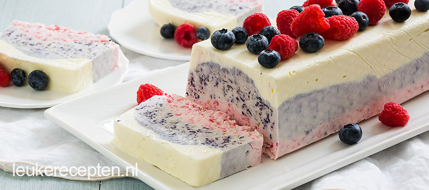

3 kleuren ijscake met bosvruchten
Deze cake is heel makkelijk te maken en bestaat uit ijs met frambozen, blauwe bessen en witte chocolade
Ingrediënten
- 1 blikje gecondenseerde melk (397 ml )
- 500 ml slagroom
- 1 vanillestokje
- 200 gr blauwe bessen
- 200 gr frambozen
- 100 gr witte chocolade
- Fruit om te garneren
Bereidingswijze
- Klop de slagroom lobbig samen met de gecondenseerde melk en het merg van het vanillestokje.
- Pureer de frambozen en de blauwe bessen apart in een keukenmachine of met een vork. Smelt de witte chocolade au bain marie.
- Verdeel het roommengsel in 3 kommen. Doe in 1 kom de frambozenpuree er bij, bij de ander de blauwe bessenpuree en als laatste de gesmolten chocolade en roer alle 3 goed door.
- Bekleed de cakevorm met folie en laat wat over de rand heen hangen. Zet de complete vorm minimaal 6 uur in de vriezer, het liefst een hele nacht. Haal de ijscake vervolgens uit de vorm en garneer met fruit. Snijd met een scherp mes in plakken.

Bekijk hier ook andere recepten:
Voorgerecht - Komkommersoep met Avocado
Hoofdgerecht - Gehaktbrood